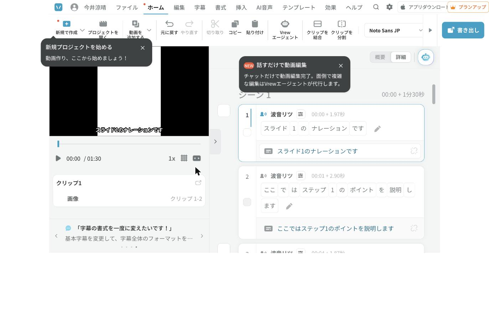

結論：VREWには公式のAPIや一括生成の機能はありません。それを前提に、「今すぐ使える半自動」「検証中の自動操作」「VREWを使わない完全自動」の3つを用意しました。
VREWの運営チームに直接確認したところ、「APIも一括生成も提供していない」との回答でした。ですので、外部のプログラムからVREWへ台本を自動で流し込む公式な方法はありません。
一方で、2025年7月からブラウザで使える「Web版VREW」が始まっています。実際にログインして開き、「新規で作成」の中に次の3つがあることを確認しました。
出典: VREW公式・Web版のお知らせ
実際に試したのは、Web版VREW（vrew.ai）の「新規で作成 → スライドで動画を作成」です。18ページのPDFで、下の4ステップをすべて自動操作で通しました。
| ステップ | 何をしたか | 自動／人 |
|---|---|---|
| 1/4 PDFアップロード | 18ページのPDFを渡して読み込ませた | 自動 |
| 2/4 台本作成方法の選択 | 「AIで台本を生成」「スライドのテキストを台本として読み込む」「台本を直接作成する」の3択から「台本を直接作成する」を選択 | 自動 |
| 3/4 台本の流し込み | スライド18枚すべての台本欄に、合計684字を自動で流し込み。改行した箇所でクリップが分割される仕様（この画面の上限は30,000字） | 自動 |
| 4/4 AI音声の生成 | 「AI音声を使用」をONにし、無料の声（波音リツ／VOICEVOX、クレジット表記で商用可）を選んで完了。約40秒でAI音声が生成され、1分30秒のプロジェクトが「このデバイスに保存済み」になった | 声の選択は人、それ以外は自動 |

完成したエディタ画面。18クリップ・波音リツ・字幕が入っている。
りょうすけさんの環境で動かすには：Codex等のAIに、ログイン済みのChromeを操作させます（Claude in Chrome、またはPlaywrightに普段使いのChromeプロファイルを持ち込む方式）。章のPDFと、章ごとの台本テキスト（【ページN】の形式で1ページ1段落）を渡せば、上の4ステップを順番に流すだけです。1章＝1プロジェクトになります。
input[type=file]、accept は .pdf,.ppt,.pptx）は「ファイルを読み込む」ボタンを押した瞬間にDOMへ生成される。ボタンの click イベントをフックして捕まえる必要があるObject.getOwnPropertyDescriptor で取得した prototype の value setter 経由で値を入れ、そのあとに input イベントを発火させる| ①半自動 | ②自動操作 | ③autovideo | |
|---|---|---|---|
| 人が手を動かす回数 | 3手順×章の数 | 最初のログインのみ（実証済み） | ほぼゼロ（PDFと台本を渡すだけ） |
| 今すぐ使えるか | 使える | 使える（AIに操作させる設定が必要） | 使える（試作済み） |
| 動画の透かし | 無料枠は冒頭10秒に「Vrew」の透かしが入る | ①と同じ（VREW側の仕様のため） | なし |
| 1回あたりの文字数上限 | 「テキストから動画」機能は無料3,000字・有料10,000字（1文＝1クリップ） | ①と同じ | 上限なし |
| 声の質 | VREWのAI音声（複数の声から選べる） | ①と同じ | Microsoftの日本語音声（Nanami等） |
| 字幕・演出 | VREWの字幕編集がそのまま使える | ①と同じ | 字幕は焼き込み。BGM・画像演出はなし |
出典: 文字数上限（公式FAQ） ／ クレジット制・透かしの案内（公式） ／ 料金の説明（公式）
台本をそのまま読ませると、「STEP1」などが変な読み方になることがあります。次の2つで対策します。
声の種類を変えたときは、誤読の出方も変わるので、1本目を必ず聴き直してください。
出典: 発音辞書（公式FAQ）
VREWは2026年4月22日からクレジット制です。無料は月200クレジットで、AI音声は100文字＝1クレジット。無料プランは動画冒頭10秒に「Vrew」の透かしが入り、有料プランで解除されます。金額やクレジット数はVREW側の改定で変わるので、実際の申し込み前に公式サイトの最新情報を確認してください。
出典: クレジット制のお知らせ（公式） ／ 料金プラン（公式）